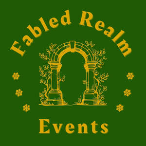

Trade Mark Journal No.2025/032 8 August 2025
UK00004241803 30 July 2025 (41,43)

- Class 41
- Entertainment; Organisation of entertainment events; Organising of recreational events; Organization of entertainment events; Conducting of entertainment events; Organising events for entertainment purposes; Organisation of entertainment and cultural events; Organization of cosplay entertainment events; Presentation of live entertainment events; Conducting of live entertainment events; Provision of recreational events; Production of live entertainment events; Arranging and conducting of entertainment events; Entertainment services in the nature of organizing social entertainment events; Arranging and conducting of live entertainment events; Entertainment services in the nature of arranging social entertainment events; Interactive entertainment; Entertainment services; Musical entertainment services; Live entertainment; Hospitality services (entertainment); Live entertainment services; Provision of entertainment; Organising of entertainment; Production of live entertainment; Live entertainment production services; Arranging of musical entertainment; Musical group entertainment services; Provision of live entertainment; Arranging of visual entertainment; Live demonstrations for entertainment; Social club services for entertainment purposes; Providing facilities for entertainment; Entertainment services in the nature of competitions; Arranging of competitions for education or entertainment; Arranging of festivals for entertainment purposes; Entertainment services in the nature of contests; Organization of entertainment competitions; Exhibition services for entertainment purposes; Arranging of entertainment shows; Entertainment in the nature of dance performances; Arranging of visual and musical entertainment; Production of live entertainment features; Organization of competitions [education or entertainment]; Competitions (Organization of -) [education or entertainment]; Organization of competitions for education or entertainment; Entertainment in the form of live musical performances (Services providing -); Services providing entertainment in the form of live musical performances; Entertainment services for producing live shows; Festivals (Organisation of -) for entertainment purposes; Organisation of outings for entertainment; Corporate entertainment services; Corporate hospitality (entertainment); Entertainment booking services; Organisation of entertainment services; Wedding celebrations (Organisation of entertainment for -); Services for providing recreational facilities; Ticketing and event booking services.
- Class 43
- Catering; Catering services; Mobile catering; Business catering services; Catering services for providing European-style cuisine; Outside catering; Mobile catering services; Outside catering services; Catering services for the provision of food; Providing food and drink catering services for convention facilities; Providing food and drink catering services for exhibition facilities; Catering of food and drinks; Food and drink catering for banquets; Catering for the provision of food and beverages; Catering services for conference centers; Food and drink catering; Catering of food and drink; Catering (Food and drink -); Providing food and drink catering services for fair and exhibition facilities; Organisation of catering for birthday parties; Catering services for the provision of food and drink; Office catering services for the provision of coffee; Catering for the provision of food and drink; Food and drink catering for cocktail parties; Banqueting services; Providing banquet and social function facilities for special occasions; Services for providing food; Bartending services; Mobile restaurant services; Corporate hospitality (provision of food and drink); Food preparation services; Arranging of wedding receptions [food and drink]; Hospitality services [food and drink]; Arranging of wedding receptions [venues]; Services for providing food and drink.
Jodie Jackson a partner in Fabled Realm Events
Kamaylah Jackson a partner in Fabled Realm Events Partnership